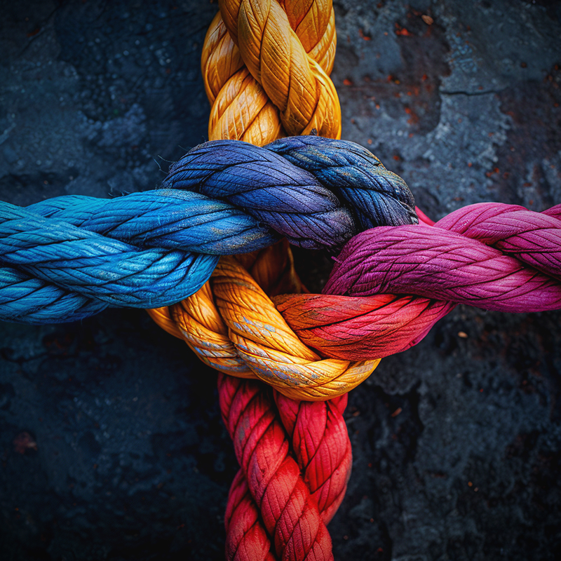
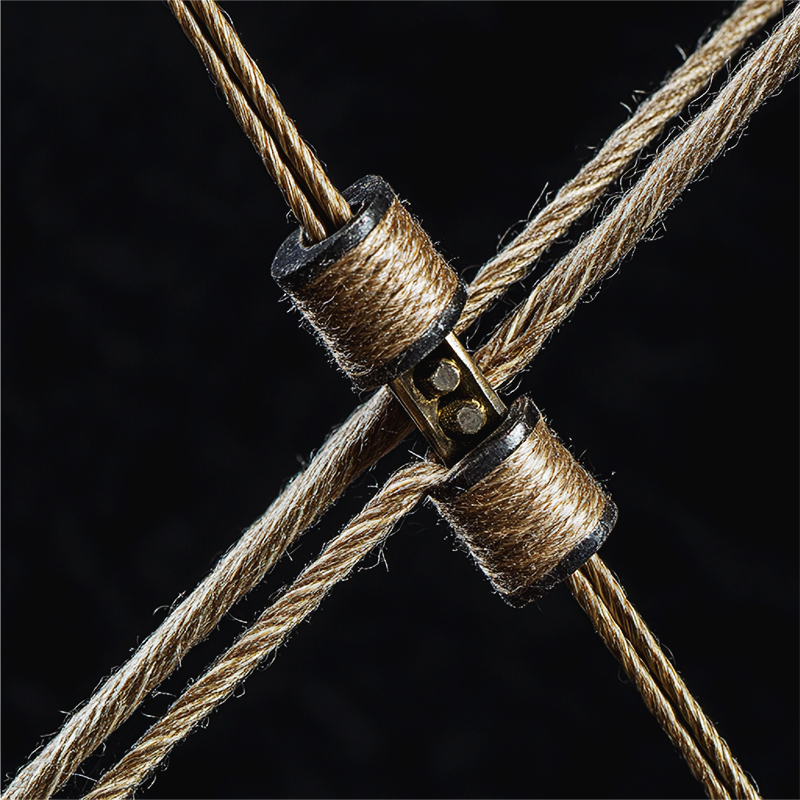

Friction-Optimized UI
Our knots feature 99.9% uptime against intense, spacetime-bending gravitational pull.
Leverage our proprietary rope-interlocking algorithms to optimise load-bearing attachment workflows at scale.
Learn the RopesOur knots feature 99.9% uptime against intense, spacetime-bending gravitational pull.
Works on nylon, polyester, and even that weird plastic twine you found in the garage.

Community-vetted cinching methods and anchoring systems for serious loop practitioners.

Rapid-deployment knotting for mission-critical hanging and improvised household fixes.
I switched my entire household over to the live. laugh. loop. infrastructure. My curtains have never been more 'scalable'.
— A domestic rigging enthusiast
Join Paulie and 342 other cordage enthusiasts already optimising their attachment workflow.